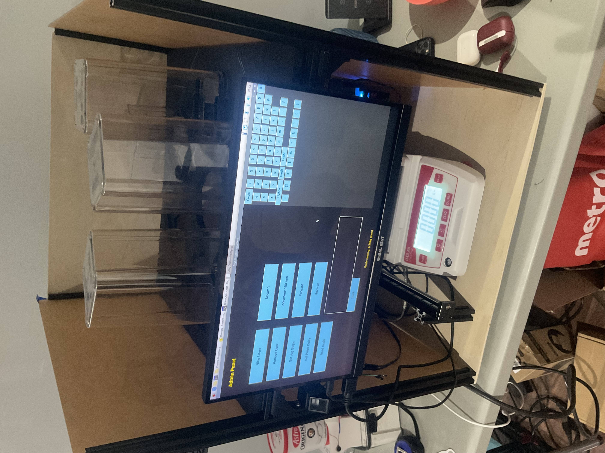

Why I Built This
The United States pays more for prescription drugs than any other country on earth — often 3–10× what the same medication costs in Canada or Europe. A huge chunk of that cost isn't the drug itself. It's the overhead: pharmacists, dispensing errors, manual compounding labour, and a system that was never designed to scale.
Compounding pharmacies are even worse. Every custom-dose medication is mixed by hand, introducing variability and human error into a process that should be deterministic. A pharmacist mixing a 0.05g dose of a hormone compound is doing something a machine can do with 10× more precision, 100× faster, and at a fraction of the cost.
Automating this doesn't just make pharmacies more efficient — it makes drugs more accessible. If you can cut the labour cost of compounding by 80%, you cut the price patients pay. That's the goal: build a machine that compounds medications with pharmaceutical-grade precision, no prescription errors, no dosing variability, and no need for a pharmacist to physically handle every order.
How It Works
The system uses a Raspberry Pi as the central controller, connected to stepper motors that drive precision auger dispensers for each compound. A high-accuracy scale reads real-time weight and closes the loop — the system keeps dispensing until the exact target dose is hit. Fingerprint authentication ensures only authorized users can initiate a dispensing cycle, and a touchscreen admin panel lets pharmacists set recipes, view dispense logs, and manage users.


Hardware
- Controller: Raspberry Pi — runs the dispensing logic, UI, user auth, and scale interface.
- Dispensing: Stepper motor-driven auger dispensers per compound — precise, repeatable, and fully software-controlled.
- Scale: High-accuracy precision scale (±0.01g) connected via serial — closed-loop feedback to hit exact target weights.
- Auth: Fingerprint sensor — only registered pharmacists can initiate a dispense cycle.
- UI: Touchscreen admin panel — user management, recipe programming, dispense history, and motor control.
Timeline
- Sept 2024: Concept and problem definition
- Oct 2024: Research — existing pharmacy automation, regulation, hardware options
- Nov–Dec 2024: Mechanical and electrical design
- Jan–Mar 2025: Build and firmware development
- Next: Accuracy testing, iteration, and path to deployment